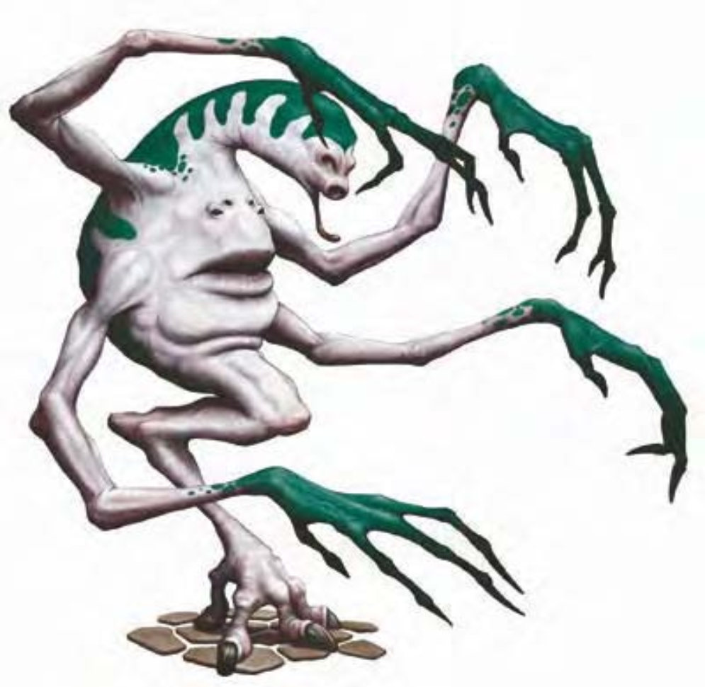

| 资料栏位 | 灵窃怪 (Ethereal Filcher) 中型异怪 |
| 生命骰 | 5d8（22HP） |
| 先攻 | +8 |
| 速度 | 40英尺（8格） |
| 防御等级 | 17（+4敏捷、+3天生）、接触14、措手不及13 |
| 基本攻击/擒抱 | +3 / +3 |
| 攻击 | 啮咬+3近战（1d4） |
| 全力攻击 | 啮咬+3近战（1d4） |
| 占据/触及 | 5英尺 / 5英尺 |
| 特殊攻击 | ― |
| 特殊能力 | 黑暗视觉60英尺、侦测魔法、幻化灵体 |
| 豁免 | 强韧+1、反射+5、意志+5 |
| 属性 | 力量10、敏捷18、体质11、智力7、感知12、魅力10 |
| 技能 | 聆听+9、巧手+12、侦察+9 |
| 专长 | 闪避、精通先攻 |
| 环境 | 地底 |
| 组织 | 单独 |
| 挑战级数 | 3 |
| 宝藏 | 无钱币、标准宝物、双倍物品 |
| 阵营 | 通常绝对中立 |
| 进化 | 6-7HD（中型）；8-15HD（大型） |
| 等级修正值 | ― |
与人类相较，这种匪夷所思的怪物只有高度大约相同，除此之外别无任何相似之处。它的身体像个大袋子，只有一条腿支撑全身重量，脚爪有力，善于抓握。脸孔位于身体正中央，有四只眼睛和一张大嘴。躯干上长出四只长手，上面有许多关节，手指又细又长。
灵窃怪的长相奇形怪状，而且还有偷窃过路旅客随身物品的怪癖。因为可以快速在灵界和物质界之间穿梭，灵窃怪的扒窃功夫更是如虎添翼。
灵窃怪以物质界为家，巢穴里面塞满各式各样的杂物。筑巢的地点通常选在隐密、人迹罕至的角落，譬如说：枯井底、废弃矿坑、高山洞窟或废墟地下室等。
灵窃怪不会说话。
战斗灵窃怪会利用"幻化灵体"的能力四处巡逻，不被人发觉（甚至可以穿过固体）。一旦锁定下手目标，灵窃怪会进入物质界，趁受害者没发现的时候偷窃物品，得手之后再以最快速度逃回灵界，如有必要，它也会咬目标一口使其分心。偷到东西后，灵窃怪会回到巢穴慢慢把玩欣赏。如果伤势严重，灵窃怪则会立刻逃走，无心战斗。
要避免遭到灵窃怪洗劫，可以采用以下几个小技巧。反应够快的受害者可以趁灵窃怪还没来得及逃走之前把东西夺回来（比照卸除武器规则，详见《玩家手册》第156页）。有些人则会准备一些不值钱的小东西带在身边，希望能引开灵窃怪注意，不会偷走真正的宝物。灵窃怪可以嗅出魔法的气味，如果在假物品上施展"涅斯图伪装灵光"或"不灭明焰"，绝对可以让他们爱不释手，要是物品本身不俗那就再好不过。值得安心的一点是，灵窃怪通常只要偷到一件东西就心满意足了。
侦测魔法（超自然）：灵窃怪可以任意施展如同"侦测魔法"法术的效果（施法者等级5）。
幻化灵体（超自然）：灵窃怪只要花费一个移动动作的时间就可以从灵界进入物质界，返回灵界则属于即时动作。它只能待在灵界1轮，之后就必须再回到物质界。除此之外，此能力效果与"幻化灵体"法术相同（施法者等级15）。
技能：灵窃怪在进行"巧手"检定时具有+8种族加值，在进行"聆听"和"侦察"检定时具有+4种族加值。